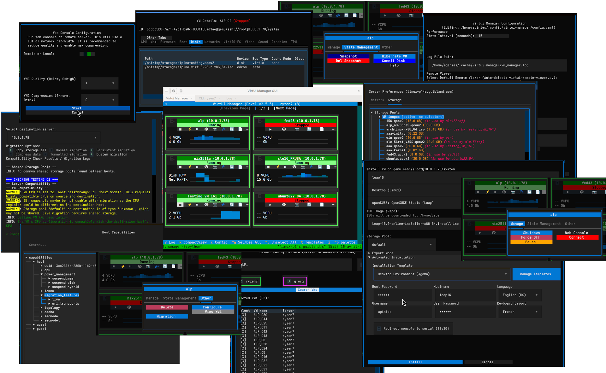

Command Your virtual Machine
The ultimate terminal-based interface for QEMU/KVM virtualization.



Why VirtUI Manager?
Automated Installation
Support for automated OS installations with template management and intelligent auto-prefill.
Command Line Interface
Power users can leverage vmanager_cmd, a dedicated shell-like CLI for rapid VM management and automated pipelines with built-in security sanitization.
Zero Dependencies
No X11 required. Runs perfectly on headless servers and remote connections via SSH.
Transhypervisor View
Manage VMs across multiple Libvirt servers in one unified dashboard.
Real-time Monitoring
Live CPU, memory, and network sparklines for every VM.
Smart Caching
Caching reduces latency and API load by up to 70%.
Storage Mastery
Move volumes, manage pools, and handle disk overlays effortlessly.
Secure Access
Integrated Websockify and noVNC support for secure remote viewing.
Libvirt Native
Built directly on the Libvirt API for maximum compatibility and stability with QEMU/KVM environments.
Event Driven
Real-time updates via events ensure ultra-low bandwidth usage and immediate UI responsiveness.
Data Integrity
Full support for snapshots and disk overlays. Branch your VM states or revert changes with confidence.
Powerful Selection
Manage large scale fleets by selecting VMs using flexible regex patterns and group filters.
Server Mastery
Granular Server Preferences allow you to manage storage pools and network configurations remotely.
Direct XML Editing
Modify VM configurations at the lowest level with the built-in XML editor.
Integrated Virsh
Drop into a fully authenticated virsh shell context-switched to your specific server.
Tmux Integration
Seamlessly launch text consoles in separate Tmux windows for multitasking mastery.